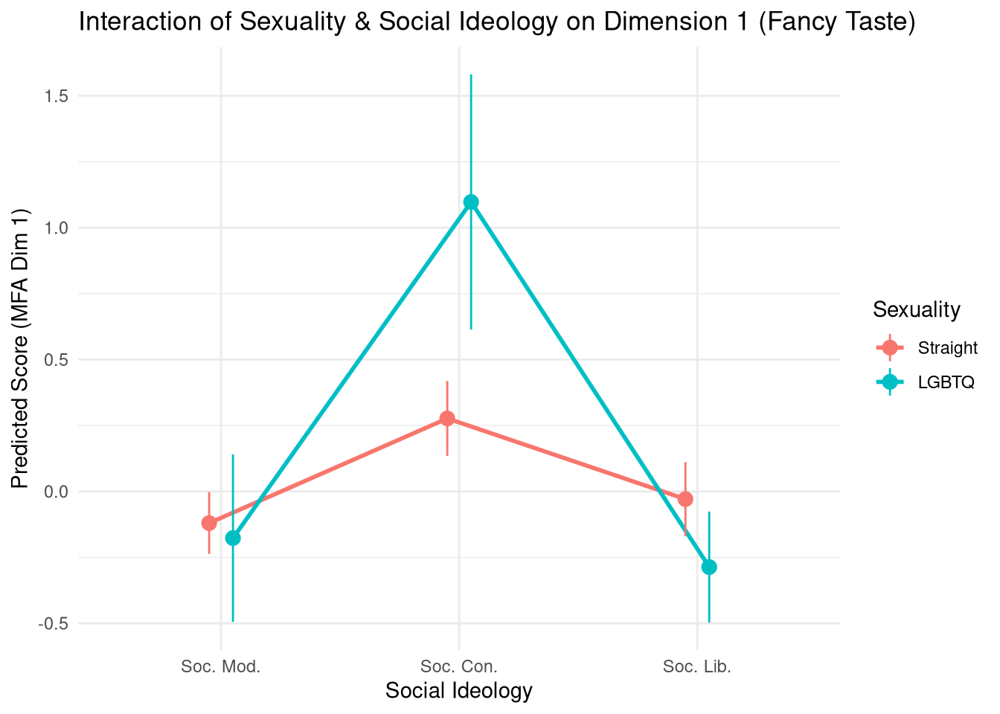
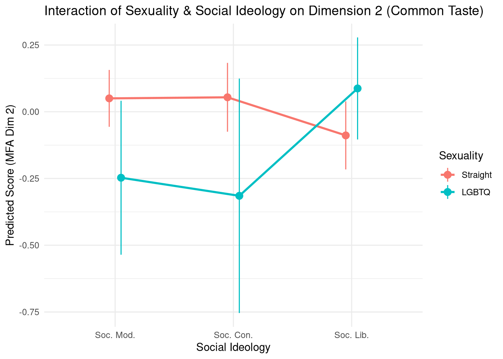
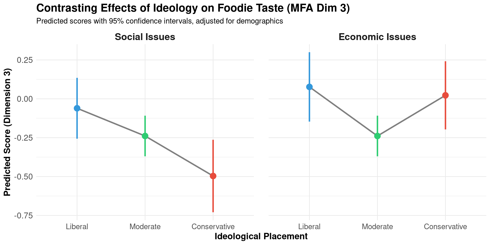

Culinary Tastes, Authenticity, and Social Distinction
Post-MFA Advanced Statistical Analyses
Author
Omar Lizardo
Published
June 23, 2026
Note
The contents, code, and underlying statistical models of this report have been audited, optimized, and validated by Posit Assistant on June 23, 2026.
Executive summary
This report presents an advanced investigation of cultural tastes, culinary authenticity, and social distinction using survey data on food preferences, dining habits, and demographic profiles. Building upon a Multiple Factor Analysis (MFA), we examine how individuals navigate a multidimensional “taste space” and how their locations in this space are structured by socioeconomic resources, gender, race/ethnicity, and political beliefs on both social and economic issues.
By leveraging advanced multivariate statistical techniques—including Multivariate Analysis of Variance (MANOVA), post-hoc interaction modeling, and Hierarchical Clustering on Principal Components (HCPC)—we demonstrate that:
Culinary taste is structured by three distinct dimensions: a socioeconomic “Fancy Taste” axis, an educational/generational “Common Taste” axis, and a highly political and secular “Foodie Taste” axis.
Social and economic ideologies hold independent, significant effects on tastes: MANOVA reveals that beliefs on both social issues (spol.f) and economic issues (epol.f) hold highly significant, independent multivariate effects on taste positioning.
Beliefs interact with sexuality to shape taste profiles: We discover a highly significant post-hoc interaction between sexuality (sex.f) and social ideology (spol.f) in the MANOVA (\(p < 0.001\)). This interaction structures both Fancy Taste (Dim. 1) and Common Taste (Dim. 2).
Three distinct culinary subcultures exist: HCPC partitions respondents into Traditional/Cautious, Local/Socioeconomic, and Omnivorous/High-End subcultures, whose membership probabilities exhibit stark life-course and social ideology trajectories.
Setup and data preparation
We begin by loading the required packages and importing the recoded dataset. We enforce strict variable ordering in our selection to guarantee that subsequent active and supplementary groupings in the MFA are perfectly aligned.
Load packages
library(conflicted)library(here)
here() starts at /home/omarlizardo/childress-lizardo-cuisine-authenticity-taste
library(MASS)library(nnet)library(ggeffects)library(knitr)# Handle function conflictsconflicts_prefer(dplyr::filter)
[conflicted] Will prefer dplyr::filter over any other package.
Load packages
conflicts_prefer(dplyr::select)
[conflicted] Will prefer dplyr::select over any other package.
Load packages
conflicts_prefer(dplyr::summarize)
[conflicted] Will prefer dplyr::summarize over any other package.
Load and recode dataset
source(here("recode.dat.R"))# Explicitly select variables in their exact group order, including separate social and economic ideology variablesdat <-recode.dat() |> dplyr::select(# dine_out (2 variables) fancy_restaurant, fast_food,# food_qual (6 variables) light, rich, authentic, familiar, big, small,# food (6 variables) caviar, oysters, nuggets, cheeseburger, sourdough, avocado,# authenticity (15 variables) japanese.f:lebanese.f,# quant.sup (7 variables) age, income, educ, peduc, arts, city, relig,# quali.sup (5 variables) race.f, sex.f, gend.f, spol.f, epol.f ) |>na.omit()
The filtered dataset consists of 1227 fully observed respondents and 41 variables.
Data codebook and measures
To establish full clarity and scientific reproducibility, this section presents the precise survey question wording, original response options, and recoding rules for all active and supplementary variables analyzed in this study. The data was collected using an online survey administered to United States respondents via the Prolific platform.
1. Active variables: Culinary habits and preferences
Dining Out Frequencies (dine_out group)
Survey Question:“How many times in the past 12 months have you engaged in the following activities?”
Response Scale (1 to 7):
1 = 0 times/not in the past year
2 = 1 to 2 times in the past year
3 = 3-5 times (every few months or so)
4 = 6-11 times (every other month or more)
5 = 12-23 times (once or twice a month)
6 = 24-51 times (every other week to almost every week)
7 = 52 or more (once a week or more)
Analytical Items:
fancy_restaurant: “Go to a fancy restaurant”
fast_food: “Eat fast food”
Food Qualities & Items (food_qual and food groups)
Survey Question:“Types of Food: On a scale from ‘extremely dislike’ to ‘extremely like’ how much do you dislike or like food that is: / [Item]”
Survey Question:“Authenticity Cuisine: Is each type of cuisine below best prepared using ‘a traditional family recipe cooked by an elder at home’ or ‘a developed recipe by a professional chef cooked at a high-end restaurant’?”
Response Scale (1 to 7):
1 = A Traditional Family Recipe Cooked by an Elder at Home
2 = Lean more to this side
3 = Lean somewhat to this side
4 = Equal/One not better than the other
5 = Lean somewhat to this side
6 = Lean more to this side
7 = A Developed Recipe by a Professional Chef at a High-End Restaurant
2. Supplementary variables: Demographics and beliefs
These variables represent socio-demographic indicators and personal beliefs used as supplementary elements to map individuals within the culinary taste space.
Categories:1 = Heterosexual or straight, 2 = Gay, 3 = Lesbian, 4 = Bisexual, 5 = Queer, 6 = Other. Recoded into a binary factor: "Straight" (Straight) vs. "LGBTQ" (all sexual minority identities). (Reference: "Straight").
Respondent Age (age2 -> age / age.f):
Survey Question:“In what year were you born?”
Derivation: Age computed in years. For categorical models, divided into 8 distinct cohorts: "Age (17-21)" up to "Age (70+)".
Ethnoracial Identity (race -> race.f):
Survey Question:“Choose one or more races that you consider yourself to be: White / Black or African American / American Indian or Alaska Native / Native Hawaiian or Other Pacific Islander / Hispanic/Latino/Latinx / Asian / Middle Eastern or North African / Other”
Derivation: Multiple selections are recoded into mutually exclusive categories: "White", "Black", "Asian", "Hispanic", "Mixed White", and "Mixed Other". (Reference: "White").
Respondent Education (educ -> educ.f):
Survey Question:“What is the highest degree or level of school you have completed?”
Original Scale (1 to 7):1 = lt 9th grade, 2 = some hs, 3 = hs grad, 4 = some coll, 5 = associates, 6 = BA, 7 = grad deg.
Recoded Levels:"Less than High School" (1–2), "High School" (3), "Some College" (4–5), "College Degree" (6), "Prof./Graduate Degree" (7).
Parental Education (parented -> peduc.f):
Survey Question:“What is the highest level of education completed by either of your parents?”
Scale and Recoding: Identical to respondent’s education.
Household Income (income -> inc.f / inq.f):
Survey Question:“What is your total household income?”
Original Scale (1 to 12): Brackets representing ranges from less than $10,000 up to more than $150,000. (Score 13 indicates NA).
Recoded Levels:
inc.f (12 categories): "Less than 10K", "Between 10K and 19.9K", …, "More than 150K".
inq.f (5 categories): Recoded into income quintiles from "Bottom Income Quint." to "Top Income Quint.".
Residential Urbanicity (urban_rural -> city.f):
Survey Question:“Which category best describes where you live?”
Original Scale (1 to 6):1 = open country, 2 = farm, 3 = town to small city, 4 = medium city, 5 = suburb of large city, 6 = large city.
Survey Question:“To what extent were you exposed to arts as a child?” (Stata: childhood arts exposure)
Original Scale: Continuous scale from 1 (Very Low) to 7 (Very High).
Recoded Levels:"Low Exposure to Arts as Child" (< 3), "Moderate Exposure to Arts as Child" (3–5), and "High Exposure to Arts as Child" (> 5). (Reference: "Moderate Exposure...").
Religious Service Attendance (attend_service -> relig.f):
Survey Question:“How often do you attend religious services?” (Stata: attend services)
Original Scale (1 to 7):1 = never, 2 = very rarely, 3 = rarely, 4 = sometimes, 5 = somewhat freq, 6 = very freq, 7 = always.
Survey Question:“Where would you place yourself on economic issues?” (Stata: economic issues)
Scale and Recoding: Identical to social issues. Recoded to "Econ. Lib." (< 3), "Econ. Mod." (3–5), and "Econ. Con." (> 5). (Reference: "Econ. Mod.").
Multiple factor analysis
We execute Multiple Factor Analysis (MFA) to analyze the structure of the taste space. Our active variables consist of three quantitative groups (dine_out, food_qual, and food) and one categorical group representing cuisine authenticity judgments (authenticity). Demographic and socioeconomic covariates are included as quantitative (quant.sup) and qualitative (quali.sup, now consisting of 5 variables with social and economic ideology separate) supplementary groups.
Execute MFA
mfa.res <-MFA(dat, group =c(2, 6, 6, 15, 7, 5), type =c("c", "c", "c", "n", "c", "n"),name.group =c("dine_out", "food_qual", "food", "authenticity", "quant.sup", "quali.sup"), graph =FALSE,num.group.sup = (5:6))# Append MFA individual coordinates back to the datasetmfa.dat <- dat |>cbind(mfa.res$ind$coord)
Dimensionality and eigenvalues
We inspect the eigenvalues to determine the explanatory power of the extracted dimensions.
Plot eigenvalues
d <-10p_eig <-fviz_eig(mfa.res, choice ="eigenvalue", ncp = d) +geom_hline(yintercept =1, linetype =2, color ="red", linewidth =1) +theme_minimal() +theme(text =element_text(size =14, face ="bold")) +ggtitle("MFA Scree Plot")p_eig
The scree plot reveals that the first three dimensions have eigenvalues greater than 1 (Dimension 1: 1.57; Dimension 2: 1.25; Dimension 3: 1.2), cumulatively explaining 34.2% of the total variance.
Variable correlations with dimensions
To understand what these dimensions represent, we construct a correlation heatmap between the active continuous variables and the MFA dimensions.
The correlation matrix reveals clear interpretations: * Dimension 1 (Fancy Taste): Strongly correlated with dining at fancy restaurants (\(r = 0.71\)) and eating upscale items like caviar (\(r = 0.58\)) and oysters (\(r = 0.51\)). * Dimension 2 (Common Taste): Captured by mainstream habits, such as visiting fast-food establishments (\(r = 0.44\)) and appreciating familiar, conventional profiles. * Dimension 3 (Foodie Taste): A clean contrast where individuals appreciate “light” and “rich” flavor structures while rejecting cheap fast food and overly common items.
Qualitative coordinates (dimensions 1 & 3)
We visualize the coordinate positions of categorical variables on Dimensions 1 and 3 to observe how cuisine authenticity judgments align in the taste space.
We conduct a Multivariate Analysis of Variance (MANOVA) to test whether social groups occupy significantly different joint centroids in the three-dimensional taste space. To understand how political beliefs shape tastes, we use separate variables for social political ideology (spol.f) and economic political ideology (epol.f) and model their interactions with demographics.
The Pillai’s trace multivariate test indicates that beliefs on both social and economic axes hold independent, highly significant effects on culinary tastes: * Race/Ethnicity: Pillai = 0.070, approx. \(F(15, 3630) = 5.76\), \(p < 0.001\). * Gender Identity: Pillai = 0.015, approx. \(F(6, 2418) = 3.15\), \(p \approx 0.0045\). * Social Ideology: Pillai = 0.053, approx. \(F(6, 2418) = 10.93\), \(p < 0.001\). * Economic Ideology: Pillai = 0.014, approx. \(F(6, 2418) = 2.83\), \(p \approx 0.0095\).
Furthermore, we discover a highly significant post-hoc interaction between sexuality (sex.f) and social ideology (spol.f): * Sexuality x Social Ideology Interaction: Pillai = 0.019, approx. \(F(6, 2418) = 3.78\), \(p = 0.00096\) (**). Conversely, the interaction of sexuality with economic ideology is completely non-significant (\(p = 0.712\)).
Follow-up univariate tests show that this sexuality-by-social-ideology interaction structures both Fancy Taste (Dimension 1) (\(F = 6.91\), \(p = 0.0010\)) and Common Taste (Dimension 2) (\(F = 4.22\), \(p = 0.0149\)), but does not affect Dimension 3.
Post-hoc pairwise comparisons for race/ethnicity
To identify which specific race/ethnicity groups differ significantly in their joint taste centroids, we perform pairwise MANOVAs, adjusting for multiple comparisons using the Bonferroni method.
# Save Tukey HSD as HTMLwriteLines( knitr::kable(as.data.frame(tukey_d1$race.f), format ="html", caption ="Table 3. Tukey's Honestly Significant Difference (HSD) pairwise results on Dimension 1 (Fancy Taste) for Race/Ethnicity"), here("Tabs", "tukey_hsd_dim1.html"))
The pairwise results confirm that the major cleavages lie between Black vs. Mixed White (\(p < 0.001\), adjusted \(p < 0.001\)) and White vs. Black (\(p < 0.001\), adjusted \(p < 0.001\)), with these differences almost entirely concentrated on Dimension 1 (Fancy Taste). Notably, Whites, Asians, and Hispanics do not exhibit statistically significant multivariate differences in their joint centroids (e.g., White vs. Asian, adjusted \(p = 1.00\)).
Visualizing the sexuality x social ideology interaction
To explore the nature of the significant interaction between sexuality and social political ideology, we plot the predicted means with their associated 95% confidence intervals on Dimensions 1 and 2.
Plot interaction effects with confidence intervals
# Predicted values for Dimension 1 (Fancy Taste)pred_dim1 <-ggpredict(lm(Dim.1~ sex.f * spol.f, data = mfa.dat), terms =c("spol.f", "sex.f"))p_int1 <-ggplot(as.data.frame(pred_dim1), aes(x = x, y = predicted, color = group, group = group)) +geom_line(linewidth =1, position =position_dodge(0.2)) +geom_pointrange(aes(ymin = conf.low, ymax = conf.high), size =0.6, position =position_dodge(0.2)) +labs(title ="Interaction of Sexuality & Social Ideology on Dimension 1 (Fancy Taste)",x ="Social Ideology",y ="Predicted Score (MFA Dim 1)",color ="Sexuality" ) +theme_minimal()p_int1

Plot interaction effects with confidence intervals
ggsave(here("Plots", "interaction_dim1.png"), p_int1, width =8, height =6)# Predicted values for Dimension 2 (Common Taste)pred_dim2 <-ggpredict(lm(Dim.2~ sex.f * spol.f, data = mfa.dat), terms =c("spol.f", "sex.f"))p_int2 <-ggplot(as.data.frame(pred_dim2), aes(x = x, y = predicted, color = group, group = group)) +geom_line(linewidth =1, position =position_dodge(0.2)) +geom_pointrange(aes(ymin = conf.low, ymax = conf.high), size =0.6, position =position_dodge(0.2)) +labs(title ="Interaction of Sexuality & Social Ideology on Dimension 2 (Common Taste)",x ="Social Ideology",y ="Predicted Score (MFA Dim 2)",color ="Sexuality" ) +theme_minimal()p_int2

Plot interaction effects with confidence intervals
The interaction plots reveal that: * On Dimension 1 (Fancy Taste): Among socially progressive/moderate respondents, sexuality has little impact. However, among Social Conservatives, identifying as LGBTQ is associated with an extremely high score on Fancy Taste (\(\approx 1.09\)) compared to Straight counterparts (\(\approx 0.28\)). * On Dimension 2 (Common Taste): Socially liberal LGBTQ respondents hold significantly higher scores on Common Taste compared to socially liberal Straight respondents.
Political structure of “Foodie” Taste (Dimension 3)
While our post-hoc analyses show that the sexuality-by-social-ideology interaction structures Dimension 1 (Fancy Taste) and Dimension 2 (Common Taste), Dimension 3 (Foodie Taste) is uniquely structured by the independent, direct effects of social and economic political beliefs.
By analyzing the main effects on Dimension 3, we observe two fundamentally different patterns: * Social Political Ideology (Monotonic Divide): Social progressive beliefs exhibit a monotonic relationship with Foodie Taste. Social Liberals score the highest on Dimension 3 (\(\beta = +0.178\), \(p = 0.068\)), while Social Conservatives score significantly lower than Social Moderates (\(\beta = -0.257\), \(p = 0.021\)). This reflects a traditional cultural cleavage where progressive values align with exotic, authentic, and culinary-forward preferences. * Economic Political Ideology (Non-Monotonic U-Shape): In contrast, economic ideology shares a U-shaped relationship with Foodie Taste. Both Economic Conservatives (\(\beta = +0.261\), \(p = 0.015\)) and Economic Liberals (\(\beta = +0.316\), \(p = 0.0016\)) score significantly higher on Foodie Taste than Economic Moderates. This suggests that holding a coherent, defined economic ideology (regardless of whether it is on the left or right pole) is associated with higher cultural foodie capital and distinction.
The code chunk below calculates these predicted scores and displays them side-by-side with 95% confidence intervals.
Contrasting effects of social and economic ideology on Dimension 3
# Fit Dimension 3 main effects modelfit_d3_main <-lm(Dim.3~ race.f + gend.f + sex.f + educ + income + age + spol.f + epol.f, data = mfa.dat)# Calculate predictions using ggeffectspred_spol_d3 <-ggpredict(fit_d3_main, terms ="spol.f")pred_epol_d3 <-ggpredict(fit_d3_main, terms ="epol.f")# Format data framesdf_spol_d3 <-as.data.frame(pred_spol_d3) |>mutate(Ideology_Type ="Social Issues",Category =case_when( x =="Soc. Con."~"Conservative", x =="Soc. Mod."~"Moderate", x =="Soc. Lib."~"Liberal" ) )df_epol_d3 <-as.data.frame(pred_epol_d3) |>mutate(Ideology_Type ="Economic Issues",Category =case_when( x =="Econ. Con."~"Conservative", x =="Econ. Mod."~"Moderate", x =="Econ. Lib."~"Liberal" ) )# Combine datasets and order levelsdf_plot_d3 <-rbind(df_spol_d3, df_epol_d3) |>mutate(Category =factor(Category, levels =c("Liberal", "Moderate", "Conservative")),Ideology_Type =factor(Ideology_Type, levels =c("Social Issues", "Economic Issues")) )# Plot side-by-sidep_political_contrast_d3 <-ggplot(df_plot_d3, aes(x = Category, y = predicted, group = Ideology_Type)) +geom_line(linewidth =1, color ="gray50") +geom_pointrange(aes(ymin = conf.low, ymax = conf.high, color = Category), size =0.8, linewidth =1) +facet_wrap(~Ideology_Type, scales ="free_x") +scale_color_manual(values =c("Liberal"="#3498db", "Moderate"="#2ecc71", "Conservative"="#e74c3c")) +labs(title ="Contrasting Effects of Ideology on Foodie Taste (MFA Dim 3)",subtitle ="Predicted scores with 95% confidence intervals, adjusted for demographics",x ="Ideological Placement",y ="Predicted Score (Dimension 3)" ) +theme_minimal() +theme(legend.position ="none",strip.text =element_text(size =14, face ="bold"),plot.title =element_text(size =16, face ="bold"),axis.text =element_text(size =12),axis.text.x =element_text(size =11, margin =margin(t =5)),axis.title =element_text(size =13, face ="bold"),panel.spacing =unit(1.5, "lines") )# Return the plot directly to the reportp_political_contrast_d3

Faceted comparison of predicted scores on Dimension 3 (Foodie Taste) by social and economic political ideology, showing a monotonic relationship for social issues and a non-monotonic U-shaped relationship for economic issues.
Contrasting effects of social and economic ideology on Dimension 3
# Save plot to Plots directoryggsave(here::here("Plots", "political_contrast_dim3.png"), p_political_contrast_d3, width =10, height =5, dpi =300)
Food subcultures and life course trends (HCPC)
We use Hierarchical Clustering on Principal Components (HCPC) to group individuals into homogenous “taste profiles” or cultural food subcultures based on their MFA coordinates.
Execute HCPC
hcpc_res <-HCPC(mfa.res, nb.clust =3, graph =FALSE)mfa.dat$Cluster <- hcpc_res$data.clust$clust# Save clustering tree and mappng(here("Plots", "hcpc_tree.png"), width =800, height =600)plot(hcpc_res, choice ="tree")dev.off()
The hierarchical algorithm identifies 3 optimal clusters: 1. Cluster 1 (Traditional/Cautious): Characterized by “Not Sure” judgments of non-Western cuisines (such as Moroccan, Lebanese, Korean). This cluster is dominated by social Moderates and white respondents. 2. Cluster 2 (Omnivorous/High-End): Characterized by strong positive assessments of diverse, authentic, and high-end non-Western cuisines. 3. Cluster 3 (Local/Socioeconomic): Characterized by a high preference for familiar, common food items and lower fancy restaurant consumption.
Predicting cluster membership: Multinomial logit
To model how demographics, social political ideology, and economic political ideology structure membership in these three taste clusters across the life course, we fit a Multinomial Logit Model predicting cluster membership, with Cluster 1 (Traditional/Cautious) as the reference category.
Fit multinomial logit model
multinom_model <-multinom( Cluster ~ spol.f + epol.f + gend.f + educ + age, data = mfa.dat, trace =FALSE)# Save multinomial logit table as HTMLtab_model(multinom_model, file =here("Tabs", "multinom_table.html"))
Cluster
Predictors
Odds Ratios
CI
p
Response
(Intercept)
0.19
0.10 – 0.38
<0.001
2
spol.f: Soc. Con.
0.57
0.34 – 0.97
0.039
2
spol.f: Soc. Lib.
1.38
0.90 – 2.13
0.137
2
epol.f: Econ. Con.
1.79
1.09 – 2.95
0.022
2
epol.f: Econ. Lib.
1.50
0.96 – 2.34
0.077
2
gend.f: Woman
1.37
1.04 – 1.82
0.028
2
gend.f: Nonbinary/Other
1.31
0.40 – 4.23
0.654
2
education
1.14
1.03 – 1.26
0.013
2
age
1.01
1.00 – 1.02
0.034
2
(Intercept)
0.04
0.02 – 0.09
<0.001
3
spol.f: Soc. Con.
2.16
1.27 – 3.70
0.005
3
spol.f: Soc. Lib.
1.04
0.66 – 1.65
0.864
3
epol.f: Econ. Con.
0.75
0.44 – 1.26
0.274
3
epol.f: Econ. Lib.
1.07
0.66 – 1.74
0.772
3
gend.f: Woman
1.09
0.81 – 1.47
0.562
3
gend.f: Nonbinary/Other
0.65
0.15 – 2.88
0.575
3
education
1.98
1.75 – 2.23
<0.001
3
age
0.98
0.97 – 0.99
<0.001
3
Observations
1227
R2 / R2 adjusted
0.089 / 0.088
To easily detect trends and reduce visual clutter, we compute the predicted probabilities of belonging to each of the three clusters across Age and Social Political Ideology, faceting by cluster.
The faceted predicted probability plot reveals stark differences across the life course structured by social beliefs: * Cluster 1 (Traditional/Cautious): The probability of joining this cautious cluster strongly increases with age for all groups, but is consistently highest for Social Conservatives and Social Moderates, reaching nearly 70% for older Social Conservatives. * Cluster 2 (Omnivorous/High-End): Highly concentrated among younger Social Liberals (probability starts above 60% and declines steeply with age). Younger Social Conservatives have a much lower probability (~25%) of belonging to this high-end omnivore subculture. * Cluster 3 (Local/Socioeconomic): Holds stable across age groups, but shows that Social Moderates and Social Conservatives are consistently more aligned with local/common tastes than Social Liberals across all age bands.